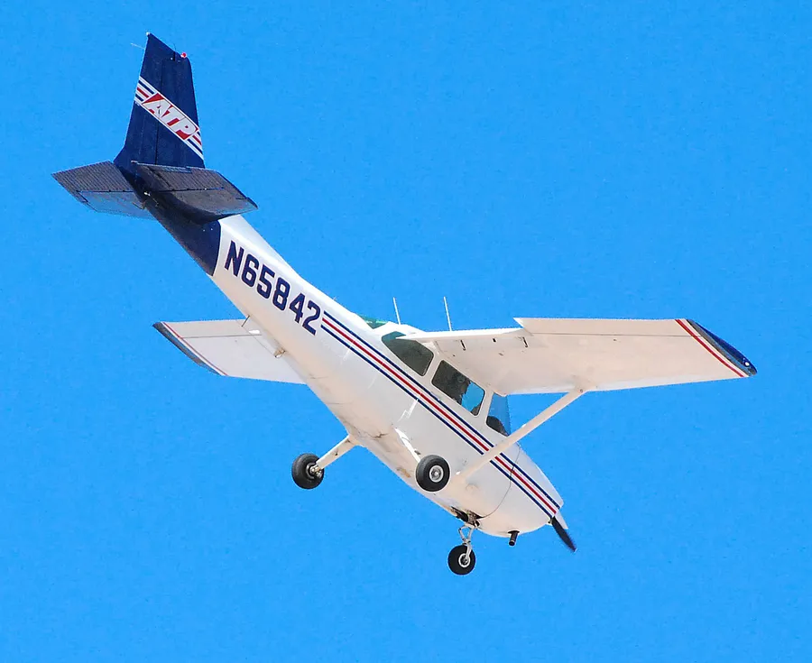

Cessna 172P (N97883)
Stall on a student's first takeoff at Newport News/Williamsburg October 6, 2022, 15:07 EDT · Newport News/Williamsburg International Airport (PHF)Serious outcome
2 serious injuries
Case summary
It was the student pilot's very first flight lesson. After the flight instructor had him help rotate on takeoff, the Cessna 172 pitched up steeply, climbed to only about 50-100 ft, and stalled. The left wing dropped, the airplane entered a descending left turn, and it struck a drainage ditch beside the runway. The instructor was killed; the student and a friend riding along in the back seat were seriously injured.

4-seat single-engine trainer
What happened
Source: NTSB Final Report (excerpt)The flight instructor was giving the student pilot his first flight lesson in an airplane. According to the pilot-rated passenger, who was observing the flight in the back seat, the student pilot assisted with the takeoff. The instructor told the student that she would tell him when to start pulling back during the takeoff roll. The instructor then initiated the takeoff roll and when the airplane reached rotation speed, she told the student pilot to start pulling back. The student pilot pulled back on the control wheel and the airplane began to climb. However, he continued to pull back and the airplane stalled less than 200 ft above the ground. The left wing dropped, and the airplane descended toward the ground. The flight instructor tried to get control of the airplane, but it was too late, and the airplane impacted a ditch adjacent to the runway.
Why it happened
Source: NTSB Final Report"The National Transportation Safety Board determines the probable cause(s) of this accident to be: The flight instructor’s failure to monitor the student pilot on takeoff and her delayed remedial action to stop him from exceeding the airplane’s critical angle of attack, which resulted in a low altitude aerodynamic stall from which she was unable to recover."
- Student pilot given a hands-on role in his very first takeoff and rotation
- Student pilot continued pulling back on the control wheel after liftoff, beyond the planned rotation input
- Airplane entered a steep nose-high pitch attitude and reached only about 50-100 ft before the left wing dropped
- Flight instructor's delayed recognition of, and corrective action for, the student's excessive back pressure
- Insufficient altitude remaining for the instructor to recover from the resulting aerodynamic stall
Photos & media (2)
NTSB docket photos, ERA23FA008The flight instructor was giving the student pilot his first flight lesson in an airplane. According to the pilot-rated passenger, who was observing the flight in the back seat, the student pilot assisted with the takeoff. The instructor told the student that she would tell him when to start pulling back during the takeoff roll. The instructor then initiated the takeoff roll and when the airplane reached rotation speed, she told the student pilot to start pulling back. The student pilot pulled back on the control wheel and the airplane began to climb. However, he continued to pull back and the airplane stalled less than 200 ft above the ground. The left wing dropped, and the airplane descended toward the ground. The flight instructor tried to get control of the airplane, but it was too late, and the airplane impacted a ditch adjacent to the runway.
"The National Transportation Safety Board determines the probable cause(s) of this accident to be: The flight instructor’s failure to monitor the student pilot on takeoff and her delayed remedial action to stop him from exceeding the airplane’s critical angle of attack, which resulted in a low altitude aerodynamic stall from which she was unable to recover."
- Student pilot given a hands-on role in his very first takeoff and rotation
- Student pilot continued pulling back on the control wheel after liftoff, beyond the planned rotation input
- Airplane entered a steep nose-high pitch attitude and reached only about 50-100 ft before the left wing dropped
- Flight instructor's delayed recognition of, and corrective action for, the student's excessive back pressure
- Insufficient altitude remaining for the instructor to recover from the resulting aerodynamic stall